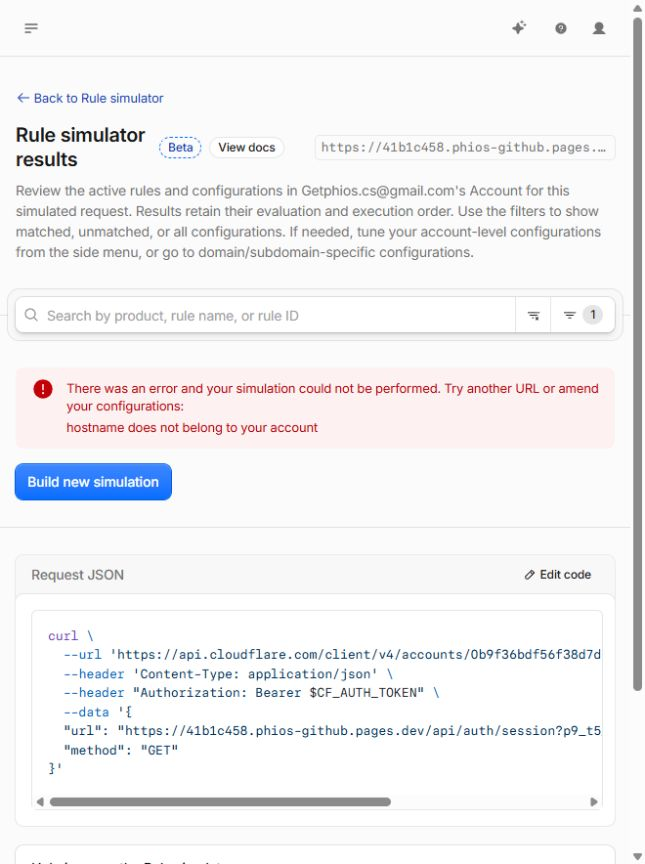

REDIRECT_VISIBLE_BUT_PRE_HANDLER_CONTAINMENT_UNPROVEN. No wildcard rollout, migration or global production isolation PASS.
Three explicitly authorized ingress mutations completed. One list, one item, one surgical rule at position 3. Original two rule bodies/order unchanged. Canary deployment not deleted or modified. Token read from local file; value not recorded.
| Request | Method/status | Location |
|---|---|---|
| https://41b1c458.phios-github.pages.dev/?p9_t5=2eed05c8-0180-48e5-ab8b-3afaff30c783&check=path-query | GET 307 | https://getphios.com/?p9_t5=2eed05c8-0180-48e5-ab8b-3afaff30c783&check=path-query |
| https://41b1c458.phios-github.pages.dev/?p9_t5=1434d50b-8c79-446a-9b19-284938b0d904&check=path-query | HEAD 307 | https://getphios.com/?p9_t5=1434d50b-8c79-446a-9b19-284938b0d904&check=path-query |
| https://41b1c458.phios-github.pages.dev/api/auth/session?p9_t5=51346ad9-efa5-4225-b25c-b919e8f6eb39&check=path-query | GET 307 | https://getphios.com/api/auth/session?p9_t5=51346ad9-efa5-4225-b25c-b919e8f6eb39&check=path-query |
| https://41b1c458.phios-github.pages.dev/api/auth/session?p9_t5=c8ff156a-13cf-4d30-b7da-2822b05deee5&check=path-query | HEAD 307 | https://getphios.com/api/auth/session?p9_t5=c8ff156a-13cf-4d30-b7da-2822b05deee5&check=path-query |
| https://41b1c458.phios-github.pages.dev/api/account/persons?p9_t5=6440ea3b-95af-4317-a440-33604fcd9e9b&check=path-query | GET 307 | https://getphios.com/api/account/persons?p9_t5=6440ea3b-95af-4317-a440-33604fcd9e9b&check=path-query |
| https://41b1c458.phios-github.pages.dev/api/account/persons?p9_t5=1a72e67c-6815-4659-b1fb-d80d86620f27&check=path-query | HEAD 307 | https://getphios.com/api/account/persons?p9_t5=1a72e67c-6815-4659-b1fb-d80d86620f27&check=path-query |
| https://getphios.com/?p9_t5=a602c7ef-31a1-4f52-8b91-3ce3bbf72c55&check=path-query | GET 200 | none |
| https://b07d86bf.phios-github.pages.dev/?p9_t5=c377909a-0e23-4577-b146-8d585a60c933&check=path-query | GET 200 | none |
| https://a1f8a3ba.phios-github.pages.dev/?p9_t5=c4425d01-d21b-4388-9ae0-ae5ef3a31fb9&check=path-query | GET 200 | none |
Early propagation responses are preserved separately in execution evidence; they are not rewritten as PASS. Six later canary GET/HEAD requests returned 307 with matching path/query. Automatic redirect following disabled; no customer POST/PUT/PATCH/DELETE.
{
"status": "TRACE_IDENTITY_NOT_PROVEN",
"api": {
"endpoint": "/accounts/0b9f36bdf56f38d7d09aebe388f15204/request-tracer/trace",
"httpStatus": 403,
"credential": "EXISTING_WRANGLER_OAUTH",
"missingRead": "Allow Request Tracer Read",
"errors": [
{
"code": 10000,
"message": "Authentication error",
"documentation_url": "https://developers.cloudflare.com/api/resources/request_tracers/subresources/traces/methods/create"
}
]
},
"dashboard": {
"type": "RULE_SIMULATOR_NOT_LIVE_TRAFFIC_TRACE",
"requestURL": "https://41b1c458.phios-github.pages.dev/api/auth/session?p9_t5_trace=canary-only",
"method": "GET",
"result": "There was an error and your simulation could not be performed. Try another URL or amend your configurations: hostname does not belong to your account",
"ruleIDReturned": false,
"screenshot": "tmp/p9-t5-trace-host-scope-failure.jpg"
},
"canaryMatchedRuleIdentity": "UNPROVEN",
"historicalHandlerExecution": "NOT_OBSERVED_BUT_NO_USABLE_HANDLER_TRACE_COLLECTED; absence not proven",
"basis": "307 live response + unique configured rule is circumstantial; cannot substitute for requested trace identity"
}
{
"status": "REDIRECT_VISIBLE_BUT_PRE_HANDLER_CONTAINMENT_UNPROVEN",
"canary2ID": "41b1c458-c79d-40e8-b47c-c2e5f4dba452",
"canary2Host": "41b1c458.phios-github.pages.dev",
"activeProductionBefore": "b07d86bf-2447-4fe8-8ded-66d9fe676c81",
"rulesetID": "e4920e8f14574ec9abce2fbe9d764056",
"newListID": "d049cc55bb5f4c1a9223619886c3745b",
"newItemID": "2c54f18d5bcd419ebafaff613a5807aa",
"newRuleID": "66f4b7cbcabe40b38a4b8fab0b1eb697",
"rulesetVersion": "3",
"rulePosition": 3,
"exactHostScopeConfirmed": true,
"redirectObserved": "6/6 post-propagation GET/HEAD 307; paths/query preserved; redirect following disabled",
"traceMatchConfirmed": false,
"preHandlerContainment": "UNPROVEN",
"oldFunctionsExecutionObserved": "UNVERIFIED_NO_HANDLER_TRACE",
"getphiosHealthy": true,
"activeProductionAfter": "b07d86bf-2447-4fe8-8ded-66d9fe676c81",
"otherHashHostsAffected": "NO_IN_TWO_TESTED_CONTROLS; exact expression excludes every other hostname",
"rollbackRequired": false,
"rollbackResult": "NOT_EXECUTED_NO_UNEXPECTED_EFFECT_OBSERVED",
"newRuleEnabled": true,
"rollback": {
"first": {
"method": "DELETE",
"endpoint": "/accounts/0b9f36bdf56f38d7d09aebe388f15204/rulesets/e4920e8f14574ec9abce2fbe9d764056/rules/66f4b7cbcabe40b38a4b8fab0b1eb697",
"scope": "Only new rule, no full ruleset replacement"
},
"verify": "Canary returns pre-test behavior, original two rules/order and canonical availability retained",
"then": {
"method": "DELETE",
"endpoint": "/accounts/0b9f36bdf56f38d7d09aebe388f15204/rules/lists/d049cc55bb5f4c1a9223619886c3745b",
"condition": "Only after fresh read proves no remaining rule references dedicated list; STOP on unexpected reference"
}
},
"zoneLBVisibility": "OPEN_NON_BLOCKING_SINGLE_CANARY_ONLY",
"writePermissionsUsed": [
"Account Filter Lists Edit",
"Bulk URL Redirects Edit"
],
"productionMutations": 3,
"mutationBreakdown": [
"Create one list",
"Create one item",
"Add one rule"
],
"D1Mutations": 0,
"D1MutationBasis": "No D1 API or SQL operation performed; this is operation accounting, not a database-wide write audit",
"providerCalls": 0,
"costUSD": 0,
"payments": 0,
"refunds": 0,
"D1MigrationStatus": "NOT_AUTHORIZED_NOT_EXECUTED",
"tokenValueRecorded": false,
"productionD1WriteIsolation": "UNPROVEN",
"wildcardRollout": "NOT_AUTHORIZED",
"firstRemainingBlocker": "EXACT_PAGES_DEV_HASH_RULE_EXECUTION_TRACE_IDENTITY_UNAVAILABLE",
"indexEmpty": true,
"HEAD": "9f25c5da3ae69db27023cc661febe8f7bdaaeedc"
}P9-G3-R6-T5-POST-PROPAGATION-EVIDENCE.json
P9-G3-R6-T5-TRACE-GAP-EVIDENCE.json
P9-G3-R6-T5-FINAL-RECEIPT.json
Cloudflare Trace simulation is configuration evaluation, not direct handler telemetry. Official Trace definition. No further rules/config/deployments changed to manufacture trace evidence. New rule remains enabled within exact authorized scope; rollback fully defined, not needed for observed behavior.
Provider 0/USD0; payment/refund 0/0; D1 operations 0; no commit/push. STOP.